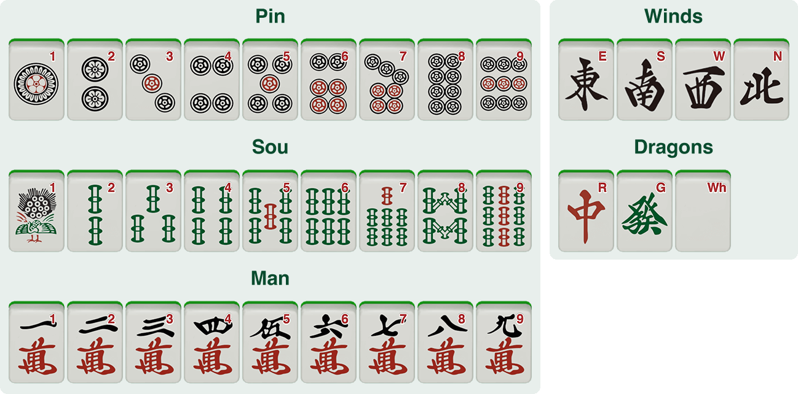
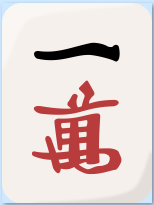
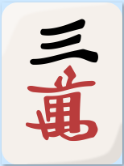
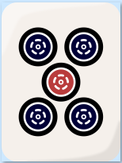
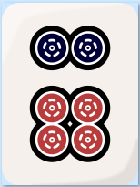
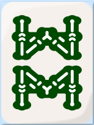
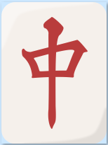

Tile-nya sama, tapi permainannya jauh lebih dalam. Berikut hal-hal mendasar yang perlu kamu tahu sebelum duduk di meja pertama.
Fokus utama biasanya hanya menyelesaikan empat kelompok tile dan satu pasang (pair) — begitu bentuk lengkap, kamu boleh menang.
Selain tangan harus selesai, kamu wajib memenuhi minimal satu yaku — pola atau kondisi kemenangan tertentu — sebelum boleh menang.
Dora adalah bonus nilai, bukan izin untuk menang.
Tangan tertutup yang sudah tenpai bisa dideklarasikan sebagai "Riichi".
Tile yang pernah kamu buang sendiri bisa membuatmu tidak boleh Ron.
Buangan tile ditata rapi, enam tile per baris, agar mudah dibaca semua pemain.
Riichi Mahjong memakai tile yang sama dengan mahjong pada umumnya: suit Man (karakter), Pin (lingkaran), dan Sou (bambu), ditambah tile angin dan naga. Klik gambar untuk memperbesar.

Saat tanganmu sudah tenpai (siap menang dengan satu tile lagi) dan masih tertutup, kamu boleh mendeklarasikan "Riichi":






Deklarasi saat tangan masih tertutup dan sudah tenpai.
Semua tile berada di rentang 2–8, tanpa terminal maupun honor.
Satu triplet naga, seat wind, atau round wind.
Kamu berada dalam furiten jika salah satu tile dalam seluruh wait-mu pernah ada di discard-mu sendiri. Saat furiten, kamu tidak boleh menang dengan Ron pada wait tersebut — tapi tetap boleh Tsumo jika menarik tile menang itu sendiri.